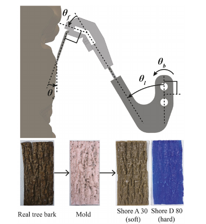
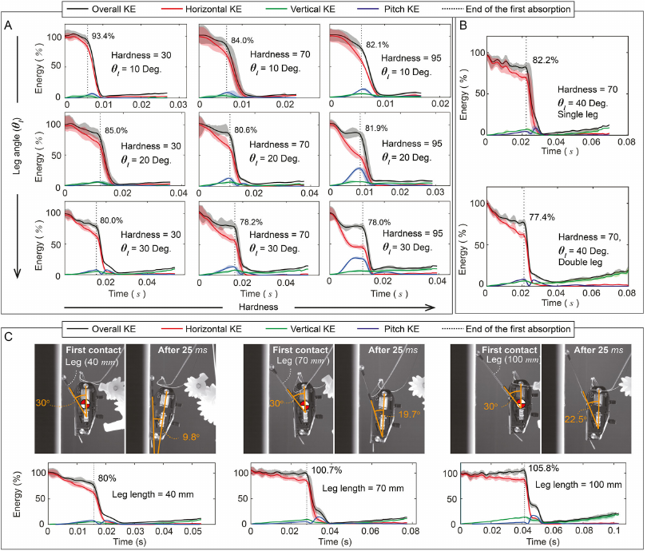
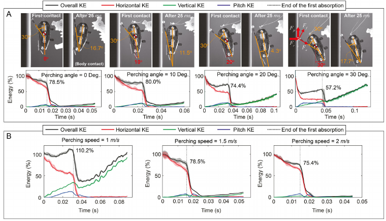

本文目录 · 12 节
一句话精要：仿鸟腿缓冲、腱绳被动收紧与爪刺挂持共同完成跳跃后的壁面栖停。重点是缓冲与接合的耦合，以及栖停如何为再次跳跃提供新的起点。
· 结合“机器人跳跃栖息机制”共享聊天与论文原文整理；重点保留能量曲线、角度关系与参数扫描的问答。
先分清：跳跃机构与栖停机构
跳跃机构负责储能和释放，栖停机构负责触壁后的缓冲与挂持。前者由弹簧、四杆机构、卷线和离合构成；电机卷线折叠机构，把能量存入弹簧，反向转动解除离合后释放。弹簧提供瞬时功率，并不凭空产生能量。
起跳后，跳跃腿还要借扭簧打开，避免挡住栖停足与墙面的接触。这里的“打开跳跃腿”和“缓冲腿在撞壁时折叠”是两个部件、两个阶段，不应合并描述。正文 Fig. 8 给出整机和离合的分工，详细离合过程另见补充视频 S2。
仿鸟腿：缓冲和被动抓紧的力路径
- 可折叠黏弹性腿：PolyJet 打印的柔软/刚性材料组合，在变形过程中储存和耗散能量；硬度、折叠角、腿长及腿数改变动态响应。
- 腱绳与柔性爪座：触壁时腿的折叠和栖停后身体重量对绳的加载，都会让爪进一步收紧；这是载荷驱动的被动动作。
- 爪刺：硬粗糙面依靠现有凸起互锁；软面还可能通过穿刺形成挂点。材料表层被撕裂也会失败，不能只看爪本身的强度。
Fig. 1 的仿生对应是：黏弹性部件近似承担肌肉缓冲功能，腱绳传递抓紧载荷，柔性爪座调整接触，爪刺完成挂持。被动维持附着不意味着储能、再次起跳和控制电路均无需能量。
读懂两次吸能与能量曲线
第一次吸能从足端触壁开始，到机身触壁为止。腿折叠把一部分水平运动转成竖直运动和俯仰运动，同时黏弹性材料耗散能量。水平动能下降不等于这部分能量全部被材料吸收，还要看竖直与转动动能。
机身触壁后进入第二次吸能：碰撞改变俯仰方向，腿进一步折叠，机身和其他结构也参与能量分散。剩余动态负载最终仍须由挂持机构承受。原文为单独表征缓冲，用圆形端部替代爪，不把挂持作用混入腿部测试。
KE = ½mv² + ½Iω²；Eab = (KEi − KEt) / KEi。式 (1) 的 Eab 是归一化的机身动能下降量，不是以 J 为单位的绝对吸收能量，也不是整机电能效率；重力引起的运动和各部件储能使其不宜直接等同于材料耗散。
聊天疑问：绿线为什么在后面重新升高？
绿线是竖直动能 EV = ½mvy²，不是竖直位置，也不表示速度向上。圆头缓冲实验没有让爪真正挂住墙：足端离墙后，重力使机器人下落，竖直速度的绝对值增大，绿色曲线就重新升高。速度为负时平方仍为正，所以“向下掉”和“绿线向上升”并不矛盾。
后段黑色总动能曲线接近绿色曲线，说明竖直运动占主要部分。这里有重力势能转化为动能，不能把上升段都归因于弹性反弹。判断反弹需要同时看接触状态、位移和速度方向。
聊天疑问：图上的 78% 是吸收了 78% 吗？
不是。Figure 4、5 虚线旁的百分数，是第一次吸能结束时的剩余总体动能相对初始动能的比例。例如 78.0% 对应动能净下降约 22.0%。它与式 (1) 的动能下降比例互补；这里的净下降也不能直接当作纯材料耗散。
长腿或低速工况使第一阶段持续更久，重力有更多时间增加竖直动能，因此会出现 100.7%、105.8% 或 110.2% 的剩余比例。材料仍可耗散能量，机身动能却可能因重力做功而高于接触开始时。
角度问答 / θb 是什么，90° 从哪里来？
θb 表示机身姿态，θl 为腿角，θf 为足角，θc 是爪相对墙面的接触角。Figure 3 中脚角 θf 固定为 40°；改变腿角和机身姿态都会改变最终爪角。
θc = 90° − (θb + θl + θf) 是式 (2) 的几何角度闭合关系。90° 来自水平参考与竖直墙面之间的直角；相加时必须沿原图选择的轴线、转向与正负号，不能把任意量出的几个无向夹角代入。
用公式说明依赖关系：若 θb = 10°、θl = 20°、θf = 40°，则 θc = 20°；机身角再增大 10°，其他角不变，爪角变为 10°。这是算式示例，不是论文的最优安装参数。
对 CAD 的启发：鱼钩安装角与触壁承载时的真实接触角不是同一个量。测量还要包括机身俯仰、机构转动、爪座变形与加载后的角度变化。聊天中的 θb 也不能直接等同于参数扫描里的初始栖停角 θp；应先核对各自零点。
{kind=link}

放大查看 ↗图表精读 / Figure 4、5 怎样做参数扫描？
Figure 4 先改变结构，Figure 5 再改变接近条件。读取每个子图时固定三个步骤：确认变量和不变量 → 找到第一次吸能结束虚线 → 同时比较黑线与红、绿、蓝分量。以下百分数已对照原图核实。
| 对照 | 原图记录 | 机制解释 |
|---|---|---|
| Fig. 4A 硬度 × 腿角 | Shore A 30/70/95；腿角 10°/20°/30°。30、10° 时剩 93.4%；95、30° 时剩 78.0% | 刚度影响变形速率，初始角影响折叠空间；较低剩余动能不保证接触更稳定。 |
| Fig. 4B 单腿 / 双腿 | 硬度 70、腿角 40°；分别剩 82.2% / 77.4% | 增加腿数改变整体刚度；不同于通过材料配比改变硬度与黏弹性。 |
| Fig. 4C 腿长 | 40 / 70 / 100 mm；分别剩 80.0% / 100.7% / 105.8% | 更长的接触过程给重力更多做功时间；不能只由结果推断“长腿耗能更差”。 |
| Fig. 5A 栖停角 | 0° / 10° / 20° / 30°；剩 78.5% / 80.0% / 74.4% / 57.2% | 改变反力的弯折与轴向分量，摩擦也参与折叠力矩；30° 的低值不能直接作为最佳栖停角。 |
| Fig. 5B 速度 | 1 / 1.5 / 2 m/s；剩 110.2% / 78.5% / 75.4% | 低速时重力贡献更明显；高速时绝对初始能量更大，须检查机构行程和挂持余量。 |
同质量下，2 m/s 的平移动能是 1.5 m/s 的约 1.78 倍。若分别乘以图中剩余比例，2 m/s 工况第一阶段后要处理的绝对剩余动能仍约为 1.5 m/s 的 1.71 倍。因此只看百分比下降会误判难度。
设计要让腿部折叠时序与机身接触相协调，并继续检查爪是否保持接触。原文举硬度 70、腿角 30° 说明较合适的第一阶段时序；这不是后文整机选型的最终答案。
{kind=link}

放大查看 ↗{kind=link}

放大查看 ↗为什么吸能多仍可能挂不住
过折叠（overfolding）会使机构触底反弹；欠折叠（underfolding）可能把较多运动传给机身俯仰，在二次接触前失去足端接触。爪若短暂离墙，已经形成的互锁也可能丢失。因此评价至少需要能量变化、接触持续性、最终挂持三个维度。
装上爪后，爪滑过粗糙凸起会产生圆头测试中没有的动态反力，改变缓冲腿折叠行为。因此 Fig. 6 中保持接触的较优参数，不能直接当作 Fig. 7 中真实爪接合的最佳参数。
参数和成功率：保留实验条件
| 实验或设计 | 记录值 | 原文位置 / 限制 |
|---|---|---|
| 圆头接触稳定性 | 腿角 10°，Shore A 30；速度 1–2 m/s | §3.2.1 / Fig. 6；不等于装爪后的最优设计 |
| 整合后选用配置 | 双腿、腿角 40°、Shore A 50、腿长 40 mm、爪角 40° | §4.1 与 Fig. 8；各角度对象不同 |
| 跳跃接近 | 起跳方向 80°；顶点接近速度约 1.78 m/s | §3.3；角度选取同时影响机身姿态和腿部避让 |
| 选定表面测试 | 粗糙面 80%、树皮 90%、木板 90%、纸板/毛巾 100% | §3.2.2 / 补充视频 S1；各 10 次，不是 Fig. 8 整机跳跃试验的同一组结果 |
| 速度窗口 | 选定配置在所测 1–2 m/s 工况表现较好 | Fig. 7；离散测试通过不保证连续区间内所有情况成功 |
原文有相对竖直/水平参考的角度表述。比较 θl、θc 和机身栖停角之前，先核对图中零点；不能把 40° 腿角与近似平行墙面的机身角当成同一个优化变量。补充视频与附录未在本次独立复核，不补填其中未读取的参数。
对双模态栖息项目的帮助
- 先限定接近条件：从预计触壁速度、角度和质量出发选择缓冲行程，而不是先复制一个材料硬度。
- 缓冲与附着分层测试：先看机构吸能和接触持续性，再装入微刺或光滑面候选足端，重新测成功窗口。
- 保持与退出都要有路径：载荷可以被动收紧爪，也可能让脱离更困难；要同步设计卸载和离墙动作。
- 避免误触发：对双稳态薄板，需检查撞壁是否触发不希望的翻转，以及翻转释放的弹性能量是否把足端弹离墙面。
这些是从原文提出的项目假设，尚未验证。Kim 的弹簧跳跃储能、黏弹性缓冲耗能与双稳态薄板切换能垒属于不同问题，不能因为都出现“弹性变形”就视作同一种机制。
下一轮可以怎样做对照
- 固定机构版本，以速度、姿态和表面为变量；每组记录成功次数/总次数、接触中断、反弹和保持时间。
- 对比无缓冲、弹性缓冲、黏弹性缓冲，同步测力和位移；区分储能回弹与耗能。
- 保留圆头测试与真实足端测试，避免把材料表征参数直接当作整机最优值。
- 复核基底是否受损：硬面找凸起、软面穿刺、表皮被撕下应作为不同标签。
证据边界
论文整合演示使用起跳支架防止初始滑移；软表面的穿刺成功不代表光滑硬墙可用。每组十次的成功率用于描述这些测试，不能写成长期可靠性保证。论文讨论进一步改善滑翔和从栖点改变跳跃策略的潜力，不应把所有设想都记为已实现功能。
与已有论文连起来读
- Asbeck2006 — 从“哪里有可用挂点”补足爪与硬粗糙面的接触基础。
- Pope2017 / SCAMP — 对比跳跃后的被动触壁与旋翼辅助的姿态转换和失足恢复。
- Shen2025 — 将速度、姿态、能量和接触行为组织为成功/失败区域。
- Fang2026 — 将软面穿刺与硬面互锁分开，不把两类表面混为“粗糙”。
- Yu2024 — 对比被动收紧、双稳态保持和可控脱附的不同结构功能。
来源与阅读定位
HyunGyu Kim, Matthew A. Woodward, Metin Sitti. Avian-Inspired Perching Mechanism for Jumping Robots. Advanced Intelligent Systems, 2023, 5(6), 2300072。
论文原文与补充材料入口 · 本次依据本地 12 页 PDF 的 §2–4、Fig. 1–9 整理。阅读讨论：机器人跳跃栖息机制 · 共享聊天。聊天主要读到 §3.1–3.2 开头；后文整机结果由本次原文补充，未据此更改个人阅读完成状态。